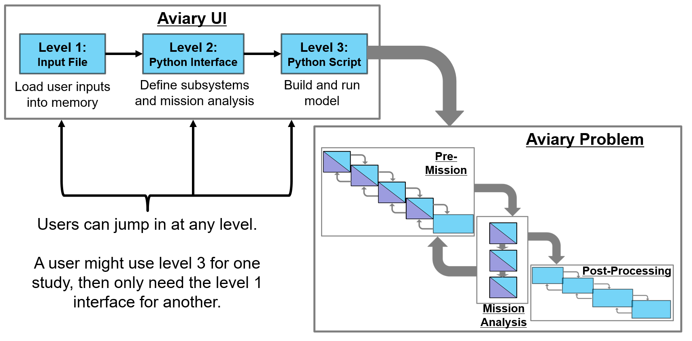

User Interface Levels#
The user interface for Aviary is divided into three tiers, depending on the level of control a user needs over a particular analysis. Level 1 is the most similar to the legacy codes Aviary is derived from and requires the least amount of user interaction. Level 3 offers users complete control over all aspects of the aircraft, mission, external subsystems, and solvers, but requires detailed knowledge of OpenMDAO.
Level 1#
Level 1 serves as the starting point for users who only need basic functionality of Aviary. It offers a straightforward and accessible approach to aircraft analysis and optimization. Users at this level can use Aviary’s expected way to define an aircraft and specify the desired mission through a csv file. While Level 1 requires no Python coding, it incorporates methods and functionalities from Level 2 to enhance the analysis capabilities and to help ease the user’s transition between levels.
Working with Aviary at Level 1 means you access it through a command line interface (CLI) or with a call to a singular Python function. You do not have to keep track of multi-line Python scripts when using Level 1. Level 1 is the simplest way to use Aviary, but it is also the most limited. This interface level uses a text-based input file to define aircraft and mission properties.
Level 2#
Level 2 introduces users to a more flexible and customizable approach. It allows users to have greater control over the mission definition and introduces basic Python programming for logic and changes in the analysis process. Users at this level can leverage Aviary’s abstracted methods and functionalities, which are built upon the capabilities of Level 3. By incorporating methods from Level 3, Level 2 empowers users to define and manipulate their aircraft models more extensively.
Level 2 is where you can integrate user-defined external subsystems, which is one of the main features of the Aviary tool. The idea is that a user who wants to incorporate a new subsystem doesn’t necessarily need to understand all the Python and OpenMDAO methods that Aviary uses, but instead only needs to create a builder class for their subsystem following an expected format. Other docs go into much more detail about how to create and use external subsystems within Aviary.
Level 3#
Level 3 represents the highest level of control and customization in Aviary’s user interface. At this level, users have full access to the Python and OpenMDAO methods that Aviary calls. They can use the complete set of Aviary’s methods, functionalities, and classes to construct and fine-tune their aircraft models. Level 3 enables users to have supreme control over every aspect of the model, including subsystems, connections, and advanced optimization techniques.
Level 3 is the most complex but specific methods defined at this level are used in levels 1 and 2, hopefully reducing user activation energy when learning more about Aviary. This progressive approach helps users gradually enhance their analysis capabilities and adapt to more complex modeling requirements as they gain proficiency and experience.
How these levels work together#
If you’re a visual person, the following figure might be helpful to describe how users are expected to interface with Aviary and how that data is fed in to the tool. This figure is only nominal; many of the details aren’t included in this view.

Explain how to define an aircraft and mission#
Detail about the .csv and phase_info dict.
Capabilities#
The capabilities of each level of the interface are summarized here; users can find information about what is expected from them and what they will have control of. Also included is an estimate of the amount of time required for someone with aircraft design experience to transition to Aviary.
Level 1 |
Level 2 |
Level 3 |
|
|---|---|---|---|
Expected Time to Learn Aviary |
~1 week |
~6 weeks |
~4-6 months |
Input File Format |
Aircraft and Mission files only (csv) |
Aircraft and Mission files, possibly additional files (csv/python) |
Custom input files (csv/python/OpenMDAO) |
Phase/ODE Customization |
Predefined Phases |
Add states/controls/enhance subsystem wrapping/augment existing ODEs |
Fully modify ODEs/EOMs/etc |
Design Variable Scaling |
Automatic only |
Automatic or custom |
Automatic or custom |
Mission Definition |
Minimally-customizable missions |
Add pre-defined mission phases |
Add custom phases |
Accessible Mission Controls#
All of the controls available for level 1 can be set with command line arguments and variables in the input csv, no code necessary. Levels 2 and 3 will require code to control the more detailed aspects of the analysis, but are also capable of using a lower level interface as a starting point.
Level 1 |
Level 2 |
Level 3 |
|---|---|---|
Mission Type (Sizing, Fallout) |
All Level 1 Controls |
All Level 2 Controls |
Optimizer (IPOPT, SNOPT) |
Specify phase order and options |
Custom ODEs and EOMs |
Mission Description (Altitude, Mach, etc) |
User Interaction with Code#
The following table describes the ways that users are able to interact with the analyses. Users should provide the contents described, but can divide them into multiple files as appropriate.
Level 1 |
Level 2 |
Level 3 |
|---|---|---|
csv that defines the aircraft and minimal mission options |
Python that creates an AviaryValues object that contains aircraft information |
Python/OpenMDAO that creates an AviaryValues object |
csv files can be used to initialize this AviaryValues |
Python/OpenMDAO to define mission and trajectory |
|
Python that calls run_aviary |
Python/OpenMDAO to create and run a problem |
|
Optional additional files for external subsystems |
Optional additional files for external subsystems |